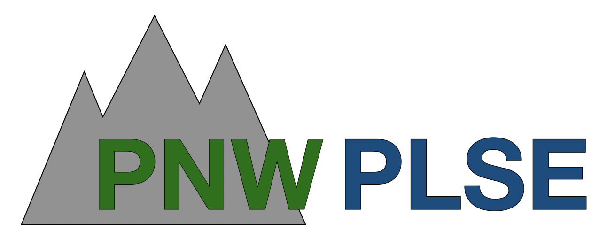

PNW PLSE 2026 is happening on May 5, 2026 at the Bill & Melinda Gates Center for Computer Science & Engineering!
The Pacific Northwest Programming Languages and Software Engineering (PNW PLSE) workshop provides an opportunity for programming languages and software engineering researchers throughout the Pacific Northwest to meet, interact, and share work in progress as well as recent results. Meetings will feature talks and demonstrations of current projects, provide opportunities to get feedback on exciting new projects, and generally foster connections that strengthen our vibrant research community in the region.
Though our official program ends at 4:45pm, please feel free to join us at Big Time Brewery and Alehouse on the Ave for informal drinks, food, and banter!